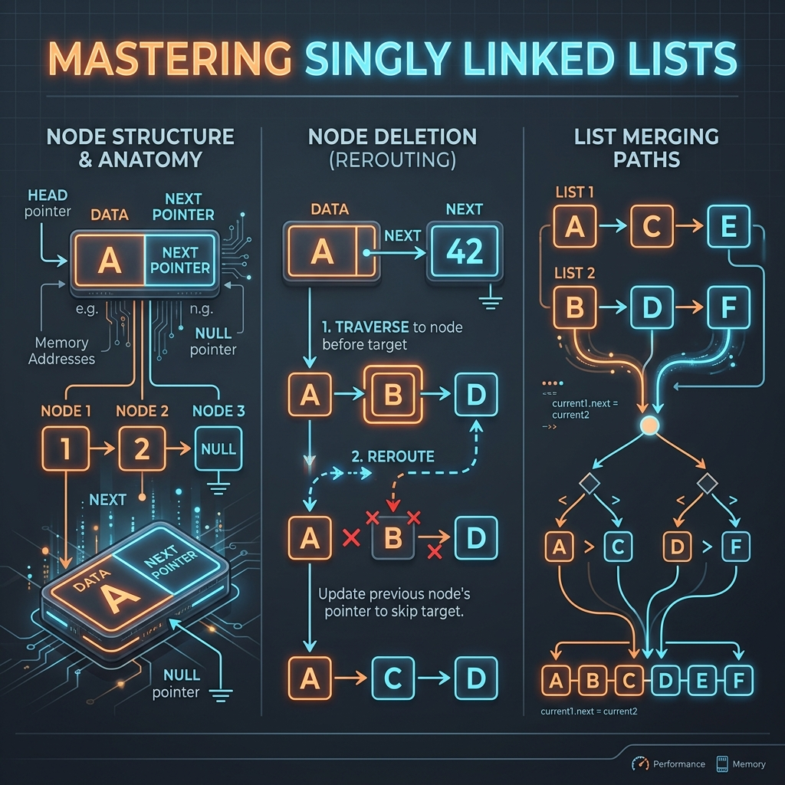

Introduction & Problem Explanation
The Remove Nth Node From End problem requires us to remove the n-th node from the end of a singly linked list and return its head.
For example, given the list 1 -> 2 -> 3 -> 4 -> 5 and n = 2, we should remove the second node from the end (which is node 4), resulting in 1 -> 2 -> 3 -> 5. The key constraint is to perform this operation in a single pass over the list, which requires us to find the target node without knowing the overall length of the list in advance.

Imagine two people walking down a trail in single file, holding the ends of a rope of length N + 1 steps. The leader walks ahead. When the leader reaches the very end of the trail (the null terminator), the follower, who is being pulled along, is exactly N + 1 steps behind. This puts the follower standing at the node immediately *before* the one we want to delete! By standing there, the follower can simply reach out and disconnect the node right in front of them, connecting their own next link to the node after that.
The Algorithmic Approach
1. Two-Pass Approach (O(n) Time, O(1) Space)
We first scan the entire list to compute its length L. Then, we perform a second pass to travel to the (L - n)-th node and delete the next node. While easy, this requires two passes over the list.
2. One-Pass Two-Pointer Offset (O(n) Time, O(1) Space)
By using two pointers, first and second, we can locate the node to be deleted in a single pass:
- We use a dummy node at the head to elegantly handle edge cases, such as when the head node itself needs to be removed.
- We advance the
firstpointer byn + 1steps from the dummy node. This sets a constant spacing or "gap" between our two pointers. - Then, we advance both
firstandsecondpointers at the same speed. - When the
firstpointer reachesnull(the end of the list), thesecondpointer is standing exactly at the node prior to the target node. We remove the target node by updating:second.next = second.next.next.
Step-by-Step Execution Walkthrough
Let's trace the one-pass deletion on the linked list 1 -> 2 -> 3 -> 4 -> 5 -> null with n = 2:
- Step 1 (Initialization):
- Create a dummy node pointing to head:
dummy -> 1 -> 2 -> 3 -> 4 -> 5. - Initialize
first = dummy,second = dummy.
- Create a dummy node pointing to head:
- Step 2 (Establish Offset): We advance
firstpointer byn + 1 = 3steps:- Step 2a:
firstmoves to node1. - Step 2b:
firstmoves to node2. - Step 2c:
firstmoves to node3. - Now,
firstis at3, andsecondis atdummy. The offset gap of 3 nodes is established.
- Step 2a:
- Step 3 (Advance Together): We advance both pointers until
firstbecomesnull:- Step 3a:
firstmoves to4,secondmoves to1. - Step 3b:
firstmoves to5,secondmoves to2. - Step 3c:
firstmoves tonull,secondmoves to3.
- Step 3a:
- Step 4 (Perform Deletion): The loop terminates because
firstisnull.secondis at node3. The node to delete issecond.next(node4).- We update the link:
second.next = second.next.next(node3points directly to node5). - The list becomes:
dummy -> 1 -> 2 -> 3 -> 5.
- Step 5 (Completion): The method returns
dummy.next, which is the head of the modified list:1 -> 2 -> 3 -> 5 -> null.
Key Code Snippets & Explanations
Here is why the main logic in the solution is important:
ListNode dummy = new ListNode(0); dummy.next = head;: Handles edge cases wherenequals the length of the list, which means the head node itself must be deleted.for (int i = 1; i <= n + 1; i++) first = first.next;: Sets up the initial spacer gap between the two runners.second.next = second.next.next;: Deletes the target node by bypassing it and routing the pointer directly to the subsequent node.
Java Implementation Code
Below is the complete, self-contained Java source code that solves this problem. It also includes a main method that traces the execution with console outputs.
package io.practise.dsa;
public class RemoveNthNodeFromEnd {
public static class ListNode {
public int val;
public ListNode next;
public ListNode(int val) { this.val = val; }
}
// Optimized - Two Pointer Approach - O(n)
public ListNode removeNthFromEnd(ListNode head, int n) {
ListNode dummy = new ListNode(0);
dummy.next = head;
ListNode first = dummy, second = dummy;
for (int i = 0; i <= n; i++) {
first = first.next;
}
while (first != null) {
first = first.next;
second = second.next;
}
second.next = second.next.next;
return dummy.next;
}
public static void main(String[] args) {
RemoveNthNodeFromEnd solver = new RemoveNthNodeFromEnd();
ListNode head = new ListNode(1);
head.next = new ListNode(2);
head.next.next = new ListNode(3);
head.next.next.next = new ListNode(4);
head.next.next.next.next = new ListNode(5);
System.out.println("--- Remove Nth Node From End Demonstration ---");
ListNode result = solver.removeNthFromEnd(head, 2); // Removes '4'
printList(result);
}
private static void printList(ListNode head) {
ListNode curr = head;
while (curr != null) {
System.out.print(curr.val + (curr.next != null ? " -> " : ""));
curr = curr.next;
}
System.out.println();
}
}
Conclusion
Solving the Remove Nth Node From End problem highlights how we can leverage key data structures and algorithmic paradigms (like two pointers, hash maps, or dynamic programming) to significantly optimize runtime and simplify code complexity.